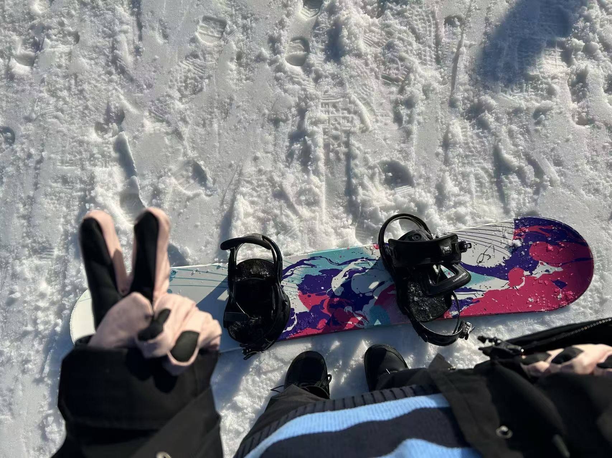
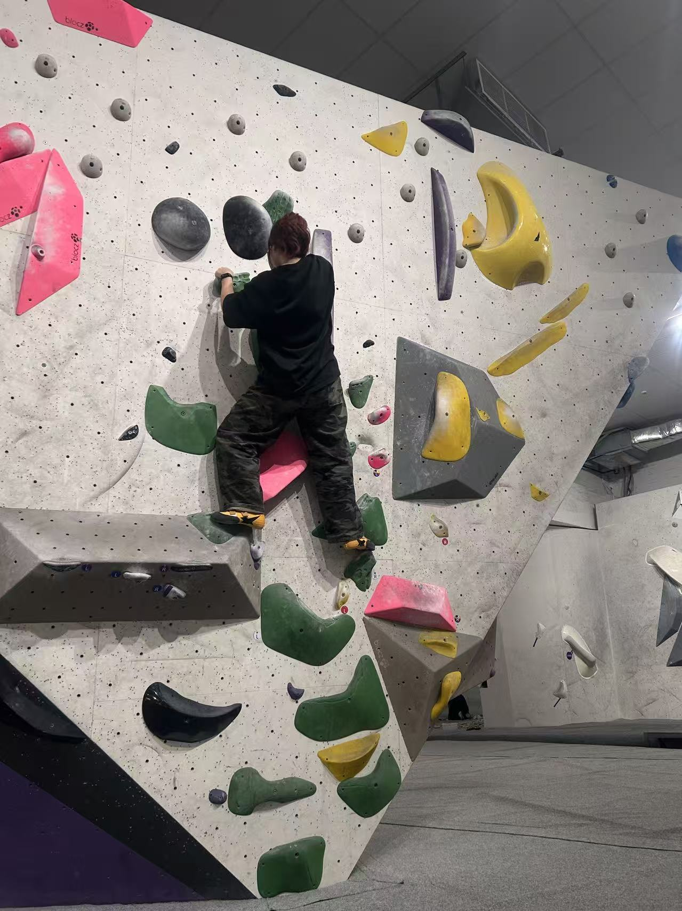
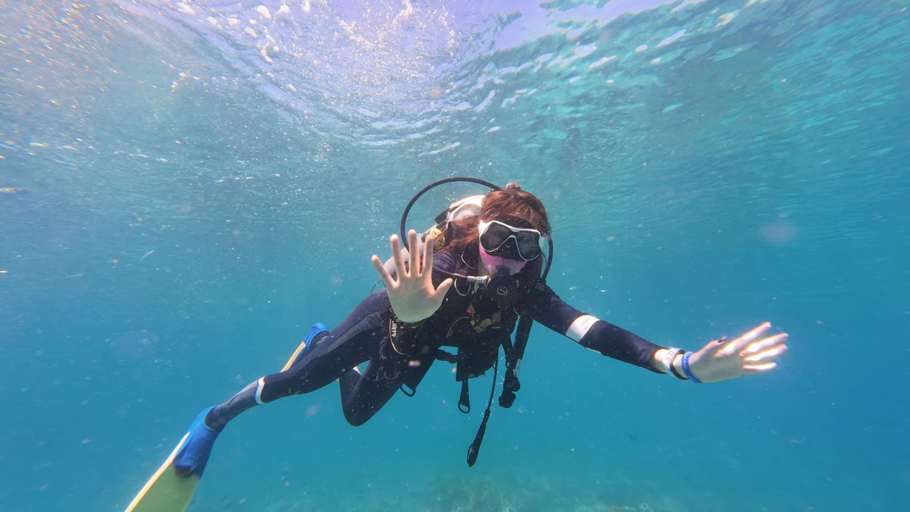

Outside research, I enjoy skiing, climbing, diving, and skateboarding, as well as quieter creative activities such as baking, calligraphy, violin, painting, and reading mystery novels. These interests help me stay curious, focused, and balanced, while also giving me different ways to explore movement, creativity, and everyday life beyond academic work.

Movement and balance.
Exploration and confidence.

Focus and strength.

Exploration beneath the surface.